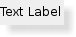

| Home · All Classes · Modules · QSS HELP · QSS 案例 · VER007 HOME |
该QLABEL小部件提供了一个文本或图像的显示。More...
继承QFrame。
该QLABEL小部件提供了一个文本或图像的显示。
QLABEL用于显示文本或图像。没有提供用户交互功能。标籤的视觉外观可以以各种方式来配置，并且它可以用于指定一个焦点助记键另一小窗口。
一个QLABEL可以包含以下任一内容类型：
| Content | Setting |
|---|---|
| Plain text | Pass a QString to setText(). |
| Rich text | Pass a QString that contains rich text to setText(). |
| A pixmap | Pass a QPixmap to setPixmap(). |
| A movie | Pass a QMovie to setMovie(). |
| A number | Pass an int or a double to setNum(), which converts the number to plain text. |
| Nothing | The same as an empty plain text. This is the default. Set by clear(). |
Warning:当传递QString在构造函数或调用setText（ ） ，一定要净化你的输入， QLABEL试图猜测它是否显示文本为纯文本或富文本。你可能需要调用setTextFormat（ ）明确，例如如果你期望的文本是在平原的格式，但（显示从Web加载数据时，例如）无法控制文本源。
当内容被任意使用这些功能的改变，以前的任何内容被清除。
默认情况下，标籤显示left-aligned, vertically-centered文本和图像，其中要显示在文本的任何选项卡automatically expanded。然而， QLABEL的外观可以调节和微调在几个方面。
在QLABEL插件区域内的内容的定位可以与调谐setAlignment（）和setIndent（ ） 。文本内容也可以沿包裹单词边界线setWordWrap（ ） 。例如，此代码设置一个下沉式面板的右下角（这两条线是用右侧的标籤冲洗）两行文字：
QLabel *label = new QLabel(this); label->setFrameStyle(QFrame.Panel | QFrame.Sunken); label->setText("first line\nsecond line"); label->setAlignment(Qt.AlignBottom | Qt.AlignRight);
的性质和功能QLABEL从继承QFrame也可用于指定要用于任何给定的标籤的小窗口框。
甲QLABEL常被用作用于交互式窗口小部件的标籤。对于这种使用QLABEL提供用于添加助记符一个有用的机制（见QKeySequence） ，将设置键盘焦点到其它部件（称为QLABEL的“夥伴” ） 。例如：
QLineEdit* phoneEdit = new QLineEdit(this); QLabel* phoneLabel = new QLabel("&Phone:", this); phoneLabel->setBuddy(phoneEdit);
在该示例中，键盘焦点转移到标籤的夥伴（在QLineEdit）当用户按下ALT + P。如果好友是一个按钮（继承QAbstractButton） ，触发记忆会模拟一个按钮的点击。
 |
A label shown in the Macintosh widget style. |
|  | A label shown in the Plastique widget style. |
 |
A label shown in the Windows XP widget style. |
该parent的说法，如果不是没有，原因self通过Qt的，而不是PyQt的拥有。
构造一个空标籤。
该parent和widget标志f，参数被传递到QFrame构造函数。
See also setAlignment（ ）setFrameStyle（）和setIndent（ ） 。
该parent的说法，如果不是没有，原因self通过Qt的，而不是PyQt的拥有。
构造一个显示文本标籤，text。
该parent和widget标志f，参数被传递到QFrame构造函数。
See also setText（ ）setAlignment（ ）setFrameStyle（）和setIndent（ ） 。
返回此标籤的哥们，或者0 ，如果没有好友当前设置。
See also setBuddy（ ） 。
从重新实现QWidget.changeEvent（ ） 。
这种方法也是一个Qt槽与C + +的签名void clear()。
清除任何标籤的内容。
从重新实现QWidget.contextMenuEvent（ ） 。
从重新实现QObject.event（ ） 。
从重新实现QWidget.focusInEvent（ ） 。
从重新实现QWidget.focusNextPrevChild（ ） 。
从重新实现QWidget.focusOutEvent（ ） 。
从重新实现QWidget.heightForWidth（ ） 。
从重新实现QWidget.keyPressEvent（ ） 。
从重新实现QWidget.minimumSizeHint（ ） 。
从重新实现QWidget.mouseMoveEvent（ ） 。
从重新实现QWidget.mousePressEvent（ ） 。
从重新实现QWidget.mouseReleaseEvent（ ） 。
返回一个指向标籤的电影，或者0，如果没有电影已定。
See also setMovie（ ） 。
从重新实现QWidget.paintEvent（ ） 。
返回该标籤的头像或0，如果标籤没有图片。
See also setPicture（ ） 。
selectionStart （）返回在标籤中第一个选定字符或-1的索引，如果没有选定的文本。
Note:该textInteractionFlags标籤上的设置需要包含两种TextSelectableByMouse或TextSelectableByKeyboard 。
此功能被引入Qt的4.7 。
See also selectedText（ ） 。
设置这个标籤的哥们buddy。
当用户按下这个标籤所指示的快捷键，键盘焦点转移到标籤的哥们部件。
哥们机制仅适用于包含在其中一个字符的前缀与符号文字QLabels ， '＆' 。此字符设置为快捷键。请参阅QKeySequence.mnemonic（ ）文档的详细信息（显示的实际符号，使用“\u0026\u0026” ） 。
在对话框中，可以创建两个数据输入部件，并为每个标籤，并设置了几何布局，每个标籤就是它的数据输入控件（它的“夥伴” ） ，例如左：
QLineEdit *nameEd = new QLineEdit(this); QLabel *nameLb = new QLabel("&Name:", this); nameLb->setBuddy(nameEd); QLineEdit *phoneEd = new QLineEdit(this); QLabel *phoneLb = new QLabel("&Phone:", this); phoneLb->setBuddy(phoneEd); // (layout setup not shown)
与上面的代码中，重点跳转到Name字段，当用户按下ALT + N，和电话字段，当用户按下ALT + P。
来取消以前设置的哥们，调用该函数buddy设置为0。
See also buddy（ ）setText（ ）QShortcut和setAlignment（ ） 。
这种方法也是一个Qt槽与C + +的签名void setMovie(QMovie *)。
设置标籤内容movie。任何以前的内容将被清除。标籤不走电影的所有权。
的哥们快捷方式，如果有的话，将被禁用。
See also movie（）和setBuddy（ ） 。
这种方法也是一个Qt槽与C + +的签名void setNum(double)。
设置标籤内容包含整数的文本表示纯文本num。任何以前的内容将被清除。什么都不做，如果整数的字符串表示形式是相同的标籤的当前内容。
的哥们快捷方式，如果有的话，将被禁用。
See also setText（ ）QString.setNum（）和setBuddy（ ） 。
这种方法也是一个Qt槽与C + +的签名void setNum(int)。
这是一个重载函数。
设置标籤内容包含双重的文字表述纯文本num。任何以前的内容将被清除。请问咱这双的字符串表示形式是相同的标籤的当前内容。
的哥们快捷方式，如果有的话，将被禁用。
See also setText（ ）QString.setNum（）和setBuddy（ ） 。
这种方法也是一个Qt槽与C + +的签名void setPicture(const QPicture&)。
设置标籤内容picture。任何以前的内容将被清除。
的哥们快捷方式，如果有的话，将被禁用。
See also picture（）和setBuddy（ ） 。
这种方法也是一个Qt槽与C + +的签名void setPixmap(const QPixmap&)。
从位置选择文本start和length字符。
Note:该textInteractionFlags标籤上的设置需要包含两种TextSelectableByMouse或TextSelectableByKeyboard 。
此功能被引入Qt的4.7 。
See also selectedText（ ） 。
这种方法也是一个Qt槽与C + +的签名void setText(const QString&)。
从重新实现QWidget.sizeHint（ ） 。
这是该信号的默认超载。
当用户点击一个链接这个信号被发射。由锚所指的URL传递中link。
这个函数中引入了Qt 4.2中。
See also linkHovered（ ） 。
这是该信号的默认超载。
当用户将鼠标悬停在一个链接这个信号被发射。由锚所指的URL传递中link。
这个函数中引入了Qt 4.2中。
See also linkActivated（ ） 。
| PyQt 4.10.3 for X11 | Copyright © Riverbank Computing Ltd and Nokia 2012 | Qt 4.8.5 |